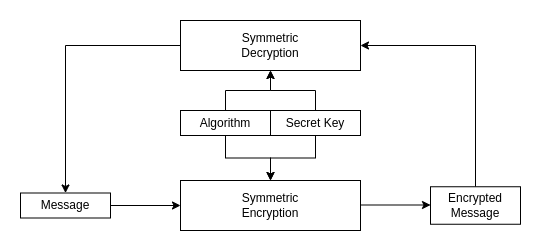
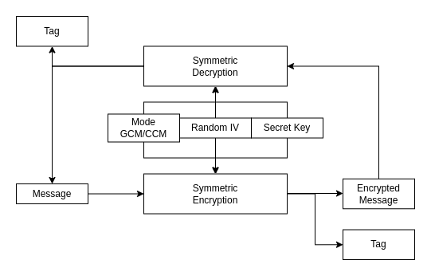

Symmetric keys
The concept
During sharing data between two devices it is currently a standard that the data is somehow encrypted. To allow safe transmission, so third persons cannot simply read the data some kind of mechanism must be introduced. The mechanism is called symmetric encryption.
Encryption
To describe how the symmetric encryption works it is good to state two important aspect of the described mechanism: - the encryption and decryption is performed by using secret key, - the secret key is known by two devices that communicate with each other, - the selected algorithm is the same for encrypting the message and for decryption.

Algorithms
There is many known algorithms that allows data encryption with known secret key. Algorithms are in two types: - block algorithms - only even blocks of bits are encrypted, - stream algorithms - data can be encrypted as it flows in the stream.
DES
Old method of encryption. DES was using different variation of keys 2 or 3. Currently used widely in EMV chip cards. Not very good algorithm to secure important information.
AES
The most common and the most advanced technique. Has it's own variation of the key ARS-128, AES-192 and AES-256.
GCM - Galois Counter Mode
It is a mode of operation for symmetric-key cryptographic block cipher. This mode allows to achieve high performance and speed when encrypting/encrypting the data with inexpensive hardware resources. This mode uses initialization vector to encrypt the data and is widely used in GMAC. GCM is defined for block ciphers where block size is 128 bits. The implementation can use instruction pipeline or hardware pipeline so parallel executions of certain algorithm stages is possible.
It is recommended due to the security to use different IV (Initialization Vector) when using the same key. GCM is not good selection for very short tag-lengths nor very long messages.
GCM has also it's own version called Sophie Germain Counter Mode that uses modular arithmetic and safe prime numbers to prevent "weak keys".
This method is also used to produce GMAC that produce MAC (Message Authentication Code). During encryption with selected mode GCM/CCM and algorithm (currently only AES is supported), the mechanism produces tag that allows to authenticate the encrypted message.

Drawbacks
Key Exhaustion - the secret key is leaking information that allows the attacker to reconstruct the used key. Mostly this can be visible during Side Channel Attacks by analyzing the power consumption. When the keys is used too many times on the data it is possible to match some patterns. Furthermore it is suggested that if the AES with Galois Counter Mode (GCM) mode is used, single key should not encrypt more than 2^32 cipher blocks.
Attribution data - no expiration date of the key is contained in the key. Therefor by using the symmetric key it is important to rotate keys and replace them with new ones. It is also problem that the key is has no information which algorithm should be used for decryption/encryption and when it becomes invalid.
OpenSSL
Unfortunately the OpenSSL does not support GCM mode. The manual states:
The enc program does not support authenticated encryption modes like CCM and GCM, and will not support such modes in the future. The enc interface by necessity must begin streaming output (e.g., to standard output when -out is not used) before the authentication tag could be validated, leading to the usage of enc in pipelines that begin processing untrusted data and are not capable of rolling back upon authentication failure.
Encrypt some data with raw aes-128 algorithm:
# Generate 64 bits of random data
$>head -c 64 < /dev/urandom > data.bin
# Encrypt with key - secret_key
$>openssl enc -aes128 -in data.bin -out data.bin.enc -pass pass:my_secret_key
*** WARNING : deprecated key derivation used.
Using -iter or -pbkdf2 would be better.
$>du -b *
64 data.bin # Raw data
96 data.bin.enc # Encrypted data
$>diff data.bin data.bin.enc -sd
Binary files data.bin and data.bin.enc differ
# Decrypt with key - secret_key
$>openssl enc -aes128 -d -in data.bin.enc -out data.bin.dec -pass pass:my_secret_key
$>du -b *
64 data.bin
64 data.bin.dec
96 data.bin.enc # Decrypted data
$>diff data.bin data.bin.dec -sd
Files data.bin and data.bin.dec are identical
# Decrypt with key - s3cret_key
$>openssl enc -aes128 -d -in data.bin.enc -out data.bin.dec.inv -pass pass:my_s3cret_key
*** WARNING : deprecated key derivation used.
Using -iter or -pbkdf2 would be better.
bad decrypt
139940000032064:error:06065064:digital envelope
routines:EVP_DecryptFinal_ex:bad decrypt:../crypto/evp/evp_enc.c:610:
$>diff data.bin data.bin.dec.inv -sd
Binary files data.bin and data.bin.dec.inv differ
$>diff data.bin.dec data.bin.dec.inv -sd
Binary files data.bin.dec and data.bin.dec.inv differ
$>du -b *
64 data.bin
64 data.bin.dec
64 data.bin.dec.inv
96 data.bin.enc
The conclusion of the experiment is that the encrypted image is bigger than the original content because certain padding is added (use -nopad) and salt (use -nosalt). Furthermore, the tool is showing the warning to not use raw aes-128 algorithm, because due to the nowadays standards this encryption is too weak. Instead during encryption multiple iteration or pbkdf2 method should be used. The PBKDF simply allows to combine multiple passwords together with random number generation to mitigate the brute-force attack method on the encrypted data.
$>openssl enc -aes128 -pbkdf2 -in data.bin -out data.bin.enc \
-pass pass:my_secret_key -nopad -nosalt
$>du -b *
64 data.bin
64 data.bin.enc
$>diff data.bin data.bin.enc -sd
Binary files data.bin and data.bin.enc differ